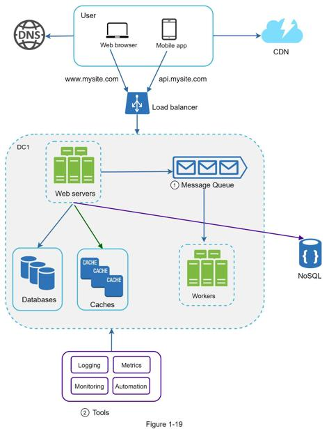

When working with a small website that runs on a few servers, logging, metrics, and automation support are good practices but not a necessity. However, now that your site has grown to serve a large business, investing in those tools is essential.
Logging: Monitoring error logs is important because it helps to identify errors and problems in the system. You can monitor error logs at per server level or use tools to aggregate them to a centralized service for easy search and viewing.
Metrics: Collecting different types of metrics help us to gain business insights and understand the health status of the system. Some of the following metrics are useful:
•Host level metrics: CPU, Memory, disk I/O, etc.
•Aggregated level metrics: for example, the performance of the entire database tier, cache tier, etc.
•Key business metrics: daily active users, retention, revenue, etc.
Automation: When a system gets big and complex, we need to build or leverage automation tools to improve productivity. Continuous integration is a good practice, in which each code check-in is verified through automation, allowing teams to detect problems early. Besides, automating your build, test, deploy process, etc. could improve developer productivity significantly.
Adding message queues and different tools
Figure 1-19 shows the updated design. Due to the space constraint, only one data center is shown in the figure.
1. The design includes a message queue, which helps to make the system more loosely coupled and failure resilient.
2. Logging, monitoring, metrics, and automation tools are included.

As the data grows every day, your database gets more overloaded. It is time to scale the data tier.